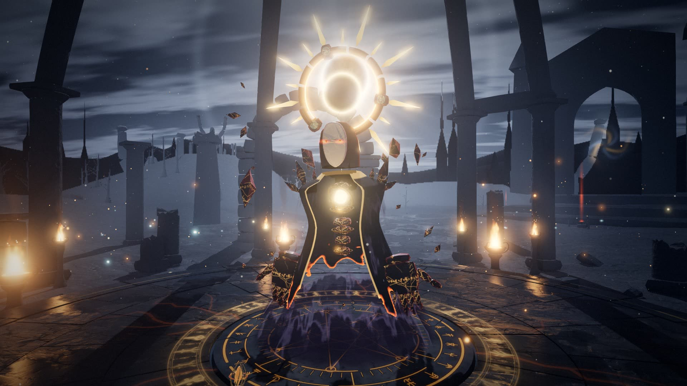
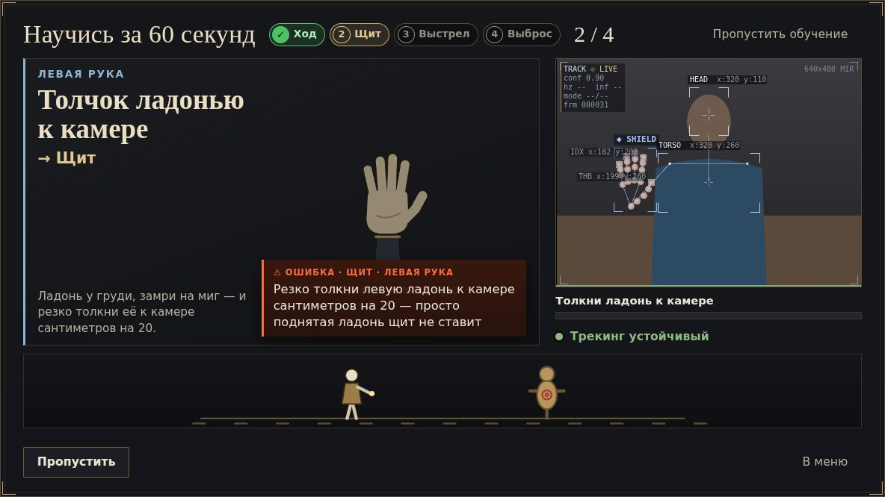
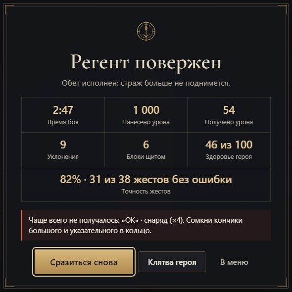
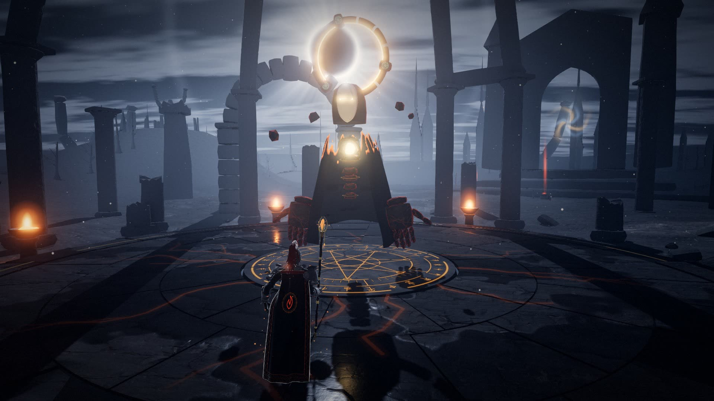
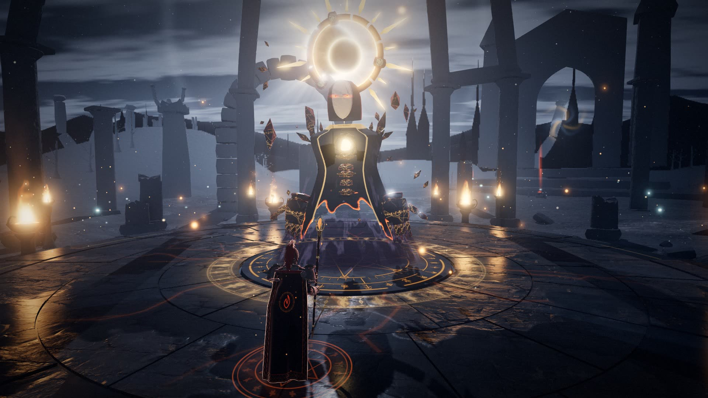
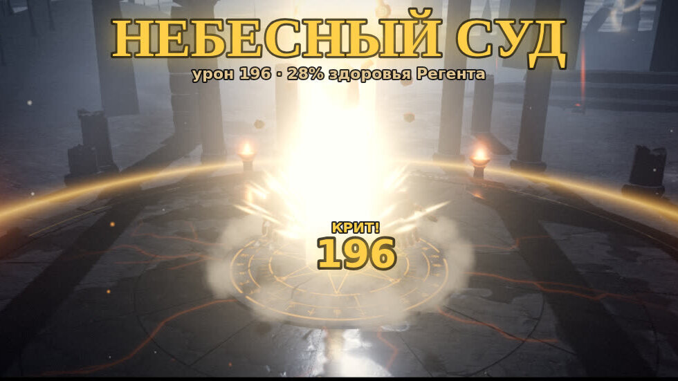
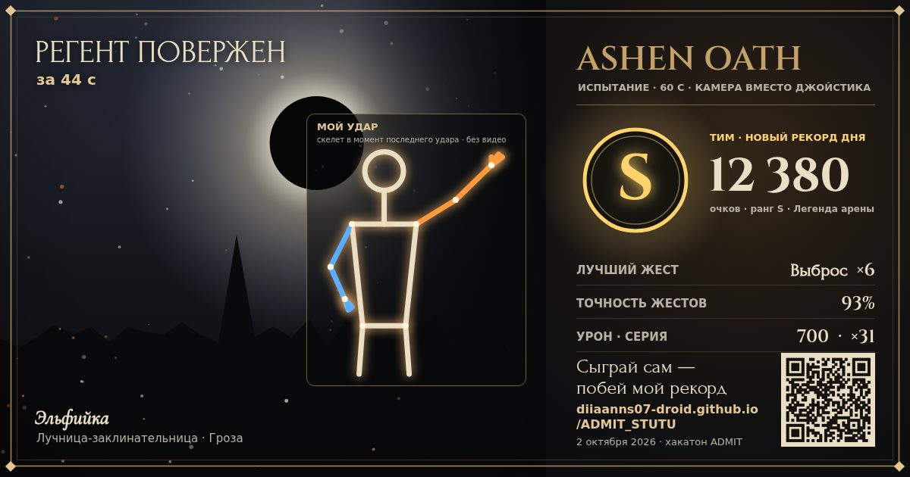
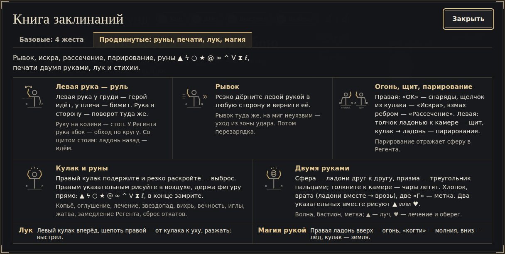

Финал ADMIT
ASHENOATH
Камера вместо джойстика
Action-RPG в браузере: героем управляют руки и тело через обычную веб-камеру.
- 5героев
- 24жеста
- 5режимов
Играть: diiaanns07-droid.github.io/ADMIT_STUTU

Идея
Игры с движением требуют железа
- Приставка и VR — дорого
- Фитнес-приложения бросают
- Часами сидим за ноутбуком
А камера уже есть в каждом ноутбуке
Мы сделали её джойстиком.
Идея
Бой с боссом, где джойстик — руки

- Регент Нимбабосс с двумя стадиями боя
- 5 героеввыбор в меню, у каждого свой облик
- 5 режимовбой с Регентом, «Испытание · 60 с», тренажёр техники, «Клятва героя», онлайн-дуэль
- Без установкинужны веб-камера и Chrome или Edge
Управление движениями
Как рука становится командой
- 1Кадр с камерывидео не покидает браузер
- 221 точка кистиMediaPipe на видеокарте
- 3Геометриянаш код: сгибы пальцев, удержание
- 4Жесткулак, затем резко раскрыть
- 5Удар в боювыброс энергии по Регенту
Управление движениями
Левая — движение, правая — магия, две — печати
Левая рука
- Ладонь у грудигерой идёт, выше — бег
- Рука вбокповорот
- Резкий дёргрывок и уклон
- Толчок ладонью к камерещит
- Кулак, резко раскрытьпарирование
Правая рука
- «OK»магические снаряды
- Щелчок указательным«Искра»
- Взмах ребром ладони«Рассечение»
- Кулак, резко раскрытьвыброс энергии
- Фигура пальцем в воздухе10 рун: копьё, молния, лечение…
Две руки
- Ладони друг к другусфера
- Хлопокгромовая волна
- Сомкнуть и развести«Врата бури»
- Растянуть вверх-вниз«Столп небес»
- Обе руки над головой«Небесный суд»
24 жеста. Для первого раза — режим «Новичок»: 5 базовых жестов и автоход.
Техническая реализация
Всё считается в браузере
- Веб-камеракадр остаётся на устройстве
- MediaPipe 0.10.35поза и 21 точка каждой кисти, Web Worker на видеокарте
- Наш кодгеометрия кисти, автоматы жестов, 63 подсказки
- Игра на three.jsбой, эффекты, звук
- 96 %форм кисти узнано на 135 реальных фото HaGRID
- 0ложных срабатываний при 8 кадрах в секунду, узнано 83–100 % попыток (синтетический тест)
- 71набор автотестов, 0 падений
- Офлайнбиблиотеки и модели в репозитории, service worker
Слабый ноутбук: распознавание само переходит с видеокарты на процессор, графика подстраивает качество.
Режим «ОШИБКА»
Не «не распознано», а «что исправить»
ОШИБКА · «OK» · СНАРЯДРАСПОЗНАНО · «OK» · СНАРЯД
Сомкни кончики большого и указательного в кольцоСнаряды летят, пока держишь жест
Подсказка из игры: подсвечены точки 4 и 8
Режим «ОШИБКА»
Подсказки на каждом шаге



Подсказки звучат голосом тренера.
После первого этапа · 30.09 03.10
Тот же бой — другой уровень

Первый этап · 30.09
Сейчас · 03.10- Вход в бой62клика
- Жесты2124жеста
- Ассеты35,810МБ
- Автотесты, 0 падений3271набор
После первого этапа
Что появилось в игре

«Небесный суд»ультимейт всем телом: облёт камеры и меч из света
«Испытание · 60 с»ранг S–D, «Зал славы дня», постер победы
«Книга заклинаний»все жесты с объяснениями
- «Новичок»: 5 жестов и автоход
- «Врата бури» и «Столп небес»
- «Дух игрока» повторяет пальцы
- Курсор-кисть: меню без мыши
- Голос тренера
- Работает без интернета
Планы развития
Что дальше
Уже в игре · 04.10
- Быстрый вход
- Камера на слабых ноутбуках
- Сложность «Кошмар»
- Кооператив онлайн
Дальше
- Казахский язык
- Режим учителя
- Регент на двоих по сети
Цель
Пилот в школе
Live demo
Проверьте сами за минуту
- 1Откройте ссылку или QR в Chrome или Edge
- 2Разрешите камеру — видео не уходит в сеть
- 3Сядьте примерно в метре от камеры
- 4Первый раз — «Новичок» и обучение за 60 секунд
Игра: diiaanns07-droid.github.io/ADMIT_STUTU
Код: github.com/diiaanns07-droid/ADMIT_STUTU
Сыграйте сами
ASHEN OATH
Любой ноутбук с камерой — игра, тренер и урок движения
Играть: diiaanns07-droid.github.io/ADMIT_STUTU
Спасибо!